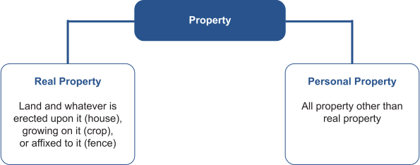
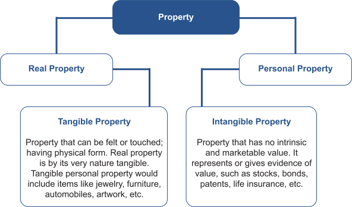

The foundation of property ownership begins with knowing the types of property.
An asset’s protection from creditors may depend substantially upon the type of property owned. For example, a judge may be more inclined to enforce a judgment against an individual’s brokerage account than to force the sale of a married couple’s personal residence to satisfy the husband’s judgment creditors.
As you will learn later in this course, it not generally possible in some states to force the sale of a jointly-owned personal residence to enforce a judgment against an individual spouse.
There are only two broad types of property. All property is either "real property" or "personal property."

While all real property is tangible, personal property may be tangible or intangible as illustrated in the chart below.
